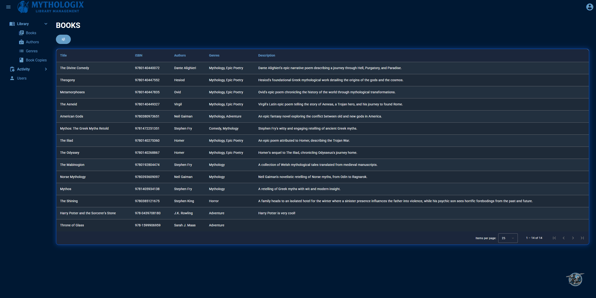
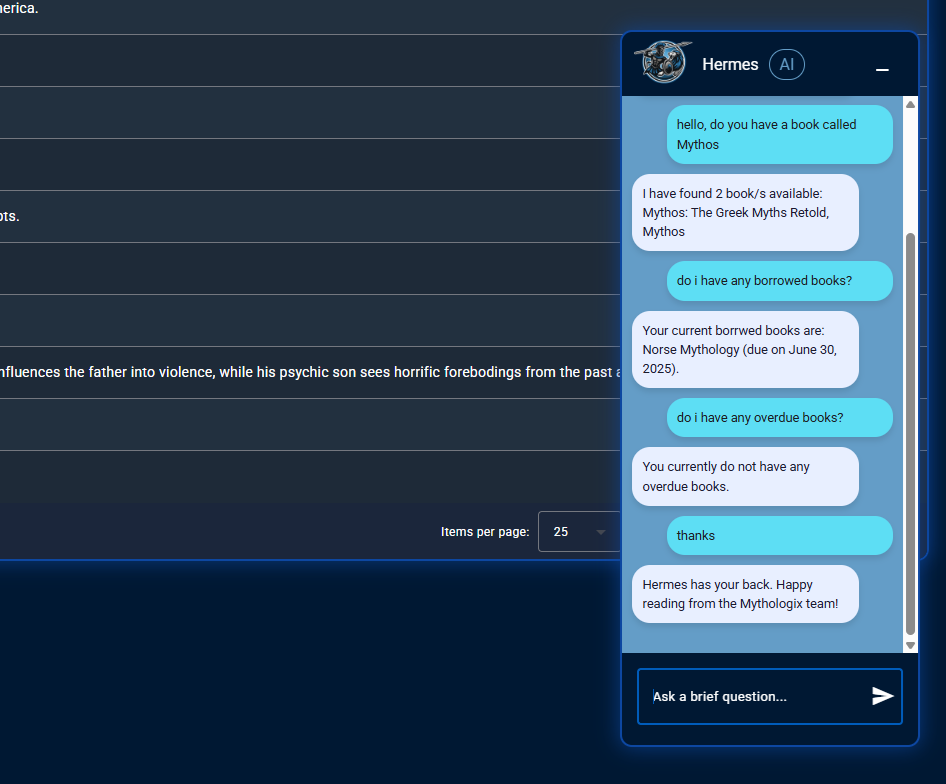
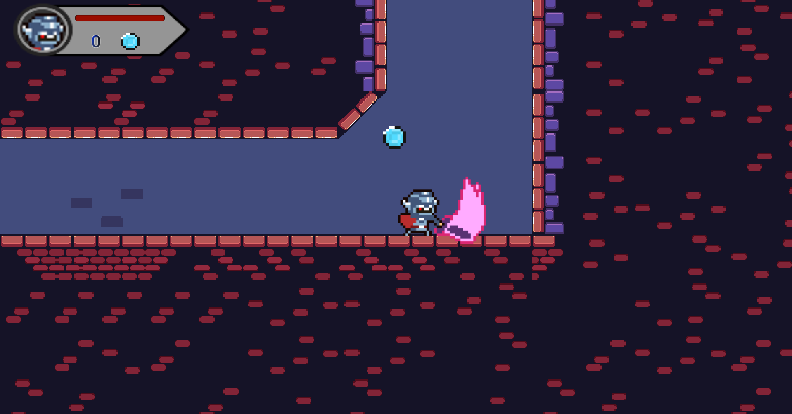
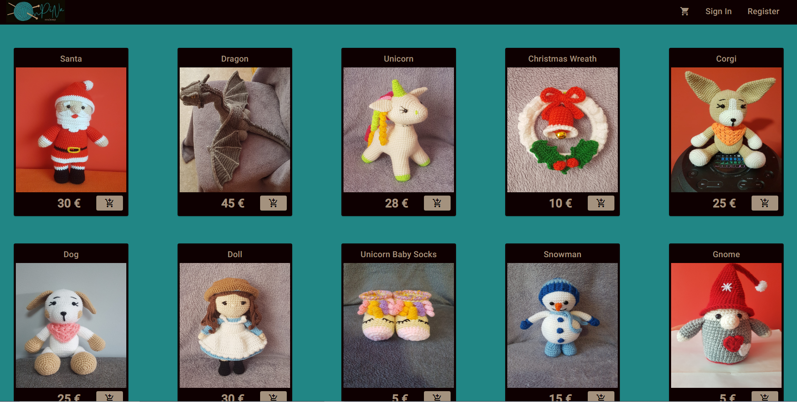
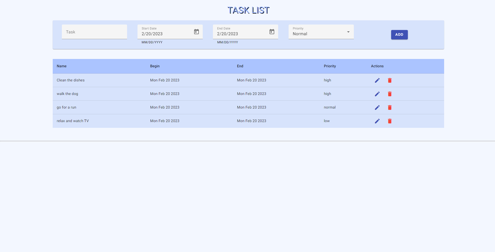
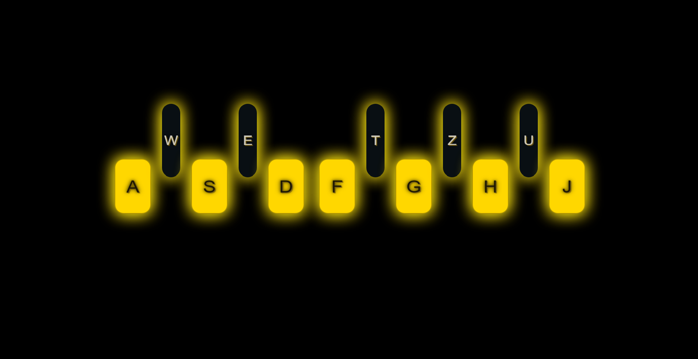

LIBRARY MANAGEMENT SYSTEM
Developed a Library Management System for efficient library operations. This solution utilizes Azure Stack for infrastructure,
Angular for the dynamic front-end, and .NET with MSSQL for robust back-end data management. It effectively handles core functions like managing
and viewing books, tracking borrowings and overdues, and ensuring user security for streamlined library administration.

CHAT ASSISTANT (OPEN AI)
Developed an AI-powered conversational assistant utilizing the OpenAI API.
This project showcases API integration and prompt engineering to deliver context-aware, real-time responses.
Technologies:.NET Core, Angular, MSSQL, Azure, OpenAI API, Angular Material
LIVE DEMO (AZURE HOST): https://salmon-sky-0c673840f.6.azurestaticapps.net/
API CODE: https://github.com/Sh1ro0o/LibraryAPI
FRONTEND CODE: https://github.com/Sh1ro0o/MythologixLibraryFrontend
Live Chat App
I developed a real-time chat application using .NET Core Web API and Angular, with SignalR handling instant, bi-directional communication.
The app supports dynamic theme switching, a responsive UI, and displays active users, typing indicators, and message timestamps.
I implemented connection management to track online/offline status and handle reconnections gracefully.
The backend manages authentication, user sessions, and message broadcasting via SignalR hubs.
This project showcases a modern, full-stack chat system with real-time updates using WebSockets, SignalR, and Angular.
Technologies: Angular, .NET Core, SignalR, WebSockets
API CODE: https://github.com/Sh1ro0o/ChatAppAPI
FRONTEND CODE: https://github.com/Sh1ro0o/ChatAppUI

PIXEL KNIGHT ADVENTURE
A computer game I made with Unity game engine using C#.
LIVE DEMO: https://sh1ro0o.itch.io/pixel-knight-adventure
CODE: https://github.com/Sh1ro0o/Pixel_Knight_Adventure

WEB CROCHET STORE
A web store front-end made using Angular and Angular Material. The site supports routing and input validation.
CODE: https://github.com/Sh1ro0o/web-store

TO-DO LIST
A simple to-do list made using Angular and Angular Material. Helps manage daily activities, meetings, and plans.
CODE: https://github.com/Sh1ro0o/to-do-list

PIANO
A playable piano built with vanilla JavaScript. Keyboard keys match the displayed piano keys.
CODE: https://github.com/Sh1ro0o/piano-player